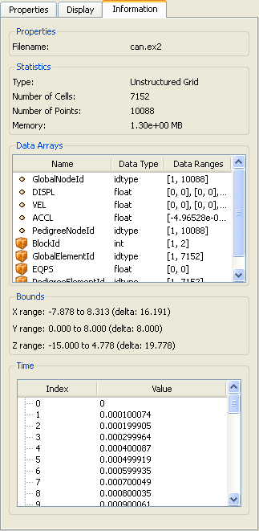

The Information tab provides information about the associated dataset. It is broken into several sections, each describing different aspects of the dataset. The Properties section is included if the dataset is the output of a reader (as opposed to a source or filter). It contains the filename read to load this dataset into ParaView.
The Statistics section indicates the type and size of the dataset. The size is specified both in terms of number of cells (elements) and points (nodes) as well as in terms of the amount of memory needed for this dataset. Note that the amount of memory reported is for the dataset itself, not for its representation in one or more views. For example, a dataset may be listed as consuming 10 MB of memory but be displayed as an outline in a particular view.
In the Data Arrays section is a list of all the data arrays (both point-centered and cell-centered) in the associated dataset. The name of each array is listed, along with the data type of the array (e.g., int, float, etc.) and the range of the data. For multi-component arrays, a range is listed per-component. As in the "Color by" menu on the Display tab, an icon before each array name indicates whether the array is point-centered or cell-centered .
The Bounds section lists the minimum and maximum coordinate in the dataset along each of the three major axes. They specify an axis-aligned bounding box for the dataset.
For datasets containing time information, the Time section lists each timestep (an index) and the associated time value associated with it.